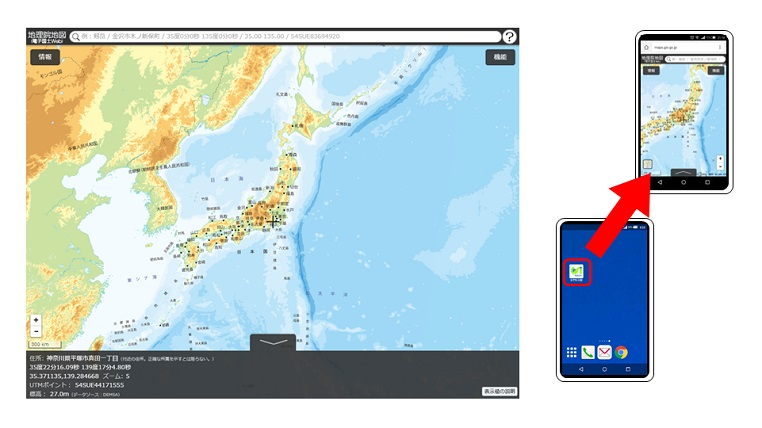
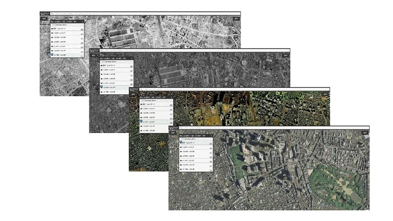
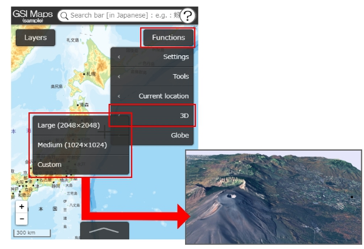

GSI Maps
(sample)
?
"GSI Maps" is a web map operated by GSI. We publishes a lot of geospatial information of Japan via this web map.

Link
Help
Terms of Use
Twitter
GitHub
Partner Network
GSI HOME
You can see orthophotos of various times.

See orthophotos.
Seamless Orthophoto
Latest（since 2007）
From 1988 to 1990
From 1984 to 1987
From 1979 to 1983
From 1974 to 1978
From 1961 to 1964
From 1945 to 1950
You can see 3D Models.



 Twitter
Twitter GSI HOME
GSI HOME